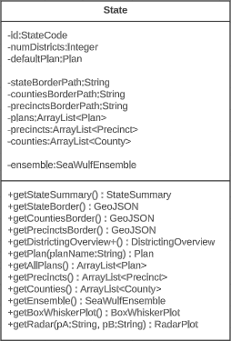
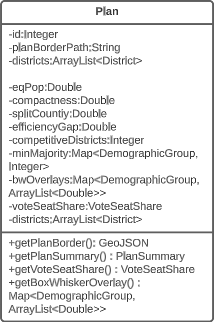
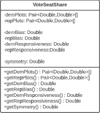
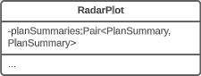
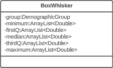

Political
Gerrymandering
Analyzer
Project Type: Full-Stack Web Application
Role: Front-End Developer (Minor Back-End)
Associated With: 
Technologies Used
Front End |
JavaScript |
HTML |
CSS |
Leaflet |
(cont.) |
Chart.js |
Plotly |
Frappe |
Fetch |
Back End |
Java |
Spring Boot |
MySQL |
Python |
Other |
Canva |
LucidChart |
GitHub |
SeaWulf |
Project Info
Political Gerrymandering State Analyzer
All Roles:Front-End, Server, Database, SeaWulf Overall Placement:1st out of 7 Teams Phases: (5 Total)
1st in GUI, Project Design, Implementation, and Presentation |
Table of Contents
|
Overview
Project DescriptionGerrymandering Origin
Overview - Original Gerrymander DepictionPurposeThe main purpose of this application is to test for the 'fairness' of a State's previously proposed or enacted political plan. This decision comes after interpreting the data gathered from conducting various testing measures on the districting proposed from the plan in question and how it affects the State. Essentially, given a plan and the data from the districting proposed by the plan, how 'fair' is the plan according to the calculations made from conducting specific testing measures on this plan as well as in comparison to an 'average' plan generated through the averaging of 10,000 plan variations generated on Stony Brook's supercomputer, the SeaWulf cluster. This 'average' plan is what serves as the basis for what is considered a 'fair' plan in our project. GoalThe questions the application seeks to answer are the following:
Answering these questions through careful analysis of the data gathered from certain testing measures (covered on the following section) is key to determining if gerrymandering has taken place and if not how 'fair' the plan's districting is. What is Gerrymandering?Introduction to GerrymanderingOverview - Gerrymandering ExampleExplanationGerrymandering is known today in U.S. politics as the practice of drawing the boudaries of districts in such a way that it benefits the political party whom has drawn them in an election. Of course, this provides an unfair advantage to the proponents of the drawing while putting the opposing party at an extreme disadvantage. OriginThe term 'Gerrymander' is a word blending of the words 'salamander' and 'Gerry'. Gerry was the last name of the Vice President of the United States, Elbridge Gerry who famously signed a bill in 1812 that created a partisan district in the Boston area that was visually compared to being closely similar to that of a mythological salamander in shape. This redistricting was to the benefit of the Democratic-Republican party at the time. ExampleTake the above example of a general population of 50 with 4 examples of boundaries being drawn to form five distinct districts. In total there are 50 voters to be distributed into 5 partitions, 30 blue and 20 red. In most cases blue should win by way of basic probability if picked at random. Now, in particular pay close attention to the right-most drawing.
Notice how column 4 was drawn in such a way that generates a win for red although they only make up 40% of the total voters. District drawings that promote gerrymandering typically consist of extremely unnatural shapes and the presence of such shapes in a districting can lead to suspicions of possible gerrymandering taking place. This is why boudaries present in column 3 are preferred as it would promote a higher likelyhood of 'majority wins' behavior (for the entire population) from a districting that resembles compact shapes. High compactness from a districting are less likely to contain gerrymandering. This is one of the tests that can be performed on a districing known as 'Compactness' which is only one of the testing measures performed in this application. Why is Gerrymandering a Threat?ExplanationGerrymandering poses a serious threat to the stability of the United States by violating one of its key principles, the First Admendment. But how so? When looking at voting in retrospect, it is clear that voting simply put is a form of political speech and partisan gerrymanders by nature infringe on that speech by promoting a notion of wasted votes. As the name suggests, wasted votes is the act of votes for a candidate being wasted as a result from strategic redistricting and is a concept used in a test measure known as Efficiency Gap. It is a test measure that is used to evaluate the potential presence of partisan gerrymanders contained within a plan (more on Efficiency Gap is covered in the Efficiency Gap subsection of the Overview section). But how does wasted votes work? Introduction to Wasted Votes
Overview - Wasted Votes Example (Majority Wins 6/10)Wasted VotesA vote is considered 'wasted' in two scenarios, when a vote is cast for a winner after recieving the necessary amount of votes rendering the rest of the votes useless and when the opposite party wins, all votes cast for the losing party are wasted on and are equally useless. I choose to say 'useless' for the reason that these votes fail to make a meaningful impact for the party to whom the vote was cast for, they have been wasted. ExampleTake the above example of a population with boundaries being drawn to form five distinct districts and again pay close attention to the right-most drawing (the X's on column 4 were purposely enlarged to highlight the problem). In order for a color to win, 3 of the 5 districts must be won. A district wins by majority vote and in this example 6 out of 10 would be needed. Wasted votes are marked with X's.
Notice how column 4 was drawn in such a way that generates a win for red although they only make up 40% of the total voters combined. In cases such as these, wasted votes do matter. Districts 1, 2 and 5 perfectly showcase the power of partisan gerrymanders. These three districts 'crack' blue votes meaning blue voters vote for a party who will already lose as these districts have exactly 6 red voters out of 10 voters total within the district with the remaining 4 being blue voters. Since 6 total votes are needed to win within a district the 4 blue votes are 'wasted' and essentially become useless. Districts 3 and 4 'pack' blue voters into each district with both having 90% blue voter representation. After the district reaches 6 votes for blue, this packing renders the remaining 30% or 3 votes 'wasted' with the 1 red vote being 'wasted' as well. Notably the loss for blue is greater than that of red in this case and these blue votes could have been used more effectively if the districting were more compact. In the case of column 4 in this example, wasted votes would indeed matter and should be taken into consideration when evaluating 'fairness'. The measure in place to evaluate wasted votes and how it potentially benefits a party is known as the 'Efficiency Gap'. A value indicating a high amount of wasted votes however does not necessarily mean gerrymandering has taken place as in the case of columns 2 and 3 but would indicate that something is abnormal and the plan should further be analyzed. For this reason a number of different testing measuers are used in this application as seen on the next section. More information on Efficiency Gap can be found in the Efficiency Gap subsection of the Testing Measures section. Example ConclusionThis is how a party can win an election while not having the higher amount of total voters through the dilution of the opposing parties voting power through districting. Today, districting is done by the political party in office with emerging concerns on the opposing side as to how 'fair' a plan proposal really is. Gerrymandering impacts the people's political voice by diminishing it. In the case that gerrymandering has been performed by a plan districting, the following election will follow a nearly pre-determined outcome. Such behavior renders the opposing party's voice moot and infringes on their policial speech through this strategic district drawing that optimizes distribution of voters in favor of the proponents of the plan. Why Analysis is NecessaryOriginal Gerrymander - Comparison
Overview - Orignal Gerrymander ComparisonExplanationAs of June 27, 2019 in a 5-4 vote, the Supreme Court ruled that claims of unconstitutional partisan gerrymandering is not subject to federal court review on the basis that they present 'non-justiciable political questions' effectively deciding not to end partisan gerrymandering. (more on this here). This decision, not to end extreme partisan gerrymandering alongside the fact that there is no established metric for measuring gerrymandering in place currently are reasons why understanding and analysis on the matter is crucial. It is what is needed in order to protect the peoples's rights as well as the integrety of the United States as a whole. Special Thanks - Moon Duchin & MGGG Redistricting LabOn Moon DuchinMoon Duchin is an American mathematician and Professor at Tuffs University in Medford, Massachusetts. The research Duchin specializes in is primarily on geometric topology, geometric group theory, and Teichmüller theory. Moon Duchin has also done extensive work on the mathematics of redistricting and gerrymandering as well as founded a research group called the 'MGGG Redistricting Lab' where Duchin and her team continue to advance these mathematical studies. Duchin is also responsible for the creation of a few plans we use for the state of Alabama. The decision to use Duchin's plans was made after the team became aware of FiveThirtyEight having an insufficient number of alternate Alabama districting plans available that were needed for this project. On MGGG Redistricting Lab & DistrictrThe MGGG Redistricting Lab staff focuses on interests such as spanning mathematics (in specific geometry, topology, discrete mathematics, and dynamics), algorithms, software development, geography STS, law, and policy. MGGG is responsible for the 'random walk' algorithm used to generate the 10,000 districting plan variations on the SeaWulf cluster that is used for calculating the 'average' districting plan as well as for the creation of the Districtr web application. The Districtr web application is a project the Lab sought to create with the intention of promoting public participation in redistricting around the United States. This application was responsible for generating plan GeoJSONs from plan jpegs for the state of Alabama and for understanding certain testing measures. More on MGGG can be read here. |
Testing Measures
IntroductionShowcasing - All Application Tabs
GUI - All Application TabsSection GoalIn this section I go through all testing measures used to analyze a chosen plan districting. The explanation includes how each measure functions with examples I have created, how to interprete measure results and how these measures pertain to our project. These meaures are commonly used to determine anomalous behavior that may occur from a plan districting from a series of angles. Anomalous result values may be an indication that the plan districting contains bias towards a party and may contain partisan gerrymanders. All Measures
The two testing measures of most importance are that of the box-whisker plot analysis and vote-seat chart analysis. The former takes advantage of 10,000 unbiased plan variation analytics that are generated on the SeaWulf for calculating the 'average plan' while the latter takes advantage of election simulations created using uniform partisan swing and given a plan districting to generate a vote-seat curve for analyzing. They are contained in the Box-Whisker Tab and Plans Details Tab respectively in the application. Information on these tabs and more are contained in the Contribution section of this page. All testing measures are performed on the SeaWulf cluster at the time of generating the 10,000 alternate plan variations. The test results are then stored on the database and later obtained from the Server based on the tabs that the user chooses when inspecting a state's plan districting. Competitive DistrictsExplanationA district is considered competitive when the number of voters of each party are close enough to equal that the candidate of either party could win. Competitive districts ensure that election outcomes are not a definitive conclusion however, the practice of partisan gerrymandering poses a threat to the number of competitive districts in the United States. The effects partisan gerrymanders can have on competitive districts can easily be seen today. Currently, there are fewer competitive districts than at any point in the last 52 years and can be exemplified by the state of Texas for this past 2022 election. Introduction to Competitive Districts
Testing Measures - Competitive Districts ExampleExampleThe most recent 'round' of redistricting saw a tremendous change to the number of competitive districts in Texas. Before this new districting was enacted 12 of the 36 districts had been competitive whereas after the redistricting only 3 of the 38 districts are competitive (two of them just barely). The former result was from a court districting whereas the latter result is from a political party districting (read more about this at Brennen Center For Justice). This is demonstrated in the given example (maps courtesy of CNN ). It is worth noting that almost all of the Republican districts in Texas are not just considered safe but 'ultra-safe'. This led to Donald Trump winning by 15 or more percentage points in 2022, a significant insurance against demographic change or political shifts that challenged Republicans in Texas last decade. Partisan gerrymanders allowed the candidate to focus on other State's in the election when previously more focus was given to Texas when there were 12 competitive districts present. How This Measure Pertains To The ProjectEach State's plans are our project is analyzed in the Plans Summaries tab of the application and contains a competitive districts analysis to determine the number of districts that can be reasonably flipped in a party's favor and are not 'safe' districts. Competitive districts are worth noting when taking into consideration how 'fair' a plan is in our project. If a certain plan is seen to have less competitive districts than another, how drastic this change is could be an indication of partisan gerrymanders present in that particular plan in an attempt to create more 'safe' districts as was the case in the example of Texas given. In rare instances, having more competitive districts may also warrant a plan to be further analyzed in the event that a previously 'safe' district of the opposing party is now a competitive district, a change that might have resulted from an effort to potentially gain another seat. The competitive districts values and other analysis outcomes can be viewed on the Plans Summaries tab of the application, more on this can be read on the Contribution section on this page. CompactnessExplanationIt is generally understood and accepted that legislative districts should be 'compact' but the exact definition of what compactness is has been subjective. For this reason, compactness measures have been created that are based on comparing geometric features of districts such as perimeters and areas to features of a related base geometric objects such as convex hull. Compactness measures have been widely used since the first test was created in 1961 being the Reock measure. This project uses the Polsby-Popper measure (1991) in order to test for compactness level on the SeaWulf cluster side. Introduction to Compactness
Testing Measures - Compactness ExamplePolsby-Popper MeasureThis measure is the ratio of the area of the district in this case (AD) to the area of a circle whose circumference is equal to the perimiter of the district (PD). This is the equation: 
Interpreting Compactness ScorePolsby-Popper district scores fall between the range of [0, 1] with the score closest to 1 indicating a more compact district and those closer to 0 indicating being less compact. Of course, having a score close to 0 does not mean the plan contains partisan gerrymanders but should be reason to delve further into plan analysis. ExampleThe above example gives an idea of what kind of shapes are considered most compact (top-left) to least compact (bottom-right). The original 1812 gerrymander would likely fall in the bottom-right category. A similar example as well as more information on compactness can be found at Avavea Redistricting. The provided example is a recreation I made in order to better isolate and display each shape. How This Measure Pertains To The ProjectEach State's plans in our project are analyzed in the Plans Summaries tab of the application and contains a compactness analysis to determine how abnormal the shapes created from the redistricting may be with severely abnormal levels delving below 10% or 0.1 as in the case with the notorious 1812 original gerrymander. Delving past this value should lead one to speculate of potential partisan gerrymanders contained within the plan in question and the plan should be further inspected. Important Notice: The exact form of compactness analysis used for this project is actually testing for the compactness average or 'mean compactness' of all districts within the plan. Taking the average into account is better for determining if a certain plan has a higher compactness level taking all of their districts into consideration than that of another plan. This testing measure as well as all others are calculated on the SeaWulf cluster at the time of generating the 10,000 plan variations. The compactness values and other analysis outcomes can be viewed on the Plans Summaries tab of the application, more on this can be read on the Contribution section on this page. Efficiency GapExplanationAs was already briefly mentioned in the Why is Gerrymandering a Threat? subsection of the Overview section, efficiency gap is a measure used to evaluate possible partisan gerrymanders through the notion of 'wasted votes' and to what extent a party may benefit from it. Examples of wasted votes is also contained within this subsection. The key to understanding wasted votes is to understand that some voters will cast their ballots for candidates who will lose (votes are 'cracked') while other voters may cast their ballots for candidates who will already win (votes are 'packed') from the strategically distributed demographic placed in each district from the redistricting. With this in mind we can simplify what a gerrymander is to simply being a district plan that gives a result of one party having more 'wasted votes' than its advesary. Introduction to Efficiency Gap
Testing Measures - Efficiency Gap (1/2) ExampleEfficiency Gap FormulaTaking advantage of the fact that all districts are to be equal in population as constitutionally required and that there are only two parties, the computation for the efficiency gap simplifies to: Efficiency Gap = Seat Margin - (2 x Vote Margin) 'Seat Margin' in this formula is the share of all seats held by a party (1 seat for each district meaning districts won by a party over total districts) minus 50%. 'Vote Margin' is similar in this formula, it is the share recieved by a party (votes won by a party over total combined votes) minus 50%. A party is said to have an advantage when the efficiency gap value is positive and a disadvantage when negative. Interpreting Efficiency Gap ValueA value of zero indicates that there is no efficiency gap or rather no advantages for either party from 'wasted votes' resulting from the redistricting. A value of no more than 8% (.08) is the benchmark to what would be considered an acceptable efficiency gap granting no significant enough benefit to be considered unfair to either party. Passing this value of 8% indicates a significant advantage to a party and would lead one to assume of possible partisan gerrymanders contained within the plan. Calculating Efficiency Gap
Testing Measures - Efficiency Gap (2/2) ExampleExampleConsider the example provided. Party A recieved 55% of the statewide vote (550 votes out of 1000 total) and having done so recieved 80% of the seats (8 of the 10 seats were won). Then calculating the efficiency gap yields us an efficiency gap value of 0.2 or 20% which is not compliant with the efficiency gap measure as it exceeds 0.8 or 8% by 12%. There are a few ways to lessen this advantage for Party A. Party A could have won 6 seats instead of the 8 won at 55% of the vote. This yields an efficiency gap value of 0 ((60% - 50%) - 2 * (55% - 50%) = 0%). An alternative would be for Party A to recieve 65% of the vote for the 8 seats won by the party to equally yield an efficiency gap value of 0 ((80% - 50%) - 2 * (65% - 50%) = 0%). But as it stands, Party A won two more seats than it would have if the parties had wasted an equal amount of votes. More on Efficiency Gap can be read at here. For simplicity, I have used the same numbers for this example. How This Measure Pertains To The ProjectEach State's plans in our project are analyzed in the Plans Summaries tab of the application and contains an efficiency gap analysis to determine if it is compliant with the efficiency gap constraint of 8% or 0.08. As previously stated, exceeding this value should lead one to speculate of potential partisan gerrymanders contained within the plan in question and the plan should be further investigated. These efficiency gap values and other analysis outcomes can be viewed on the Plans Summaries tab of the application, more on this can be read on the Contribution section on this page. Important Notice: The efficiency gap constraint slope has also been implemented on the vote-seat chart contained within the Plans Details tab and can be toggled to better visualize how well the calculated vote-seat chart lies within this range at any seat to vote combination. Equal Population MeasuresExplanationAs settled in Karcher v. Daggett, 462 U.S. 725 (1983), congressional districts are constitutionally required to be 'as nearly equal in population as practicable'. This is to maintain the 'one-person one-vote' rule that ensures one person's voting power ought to be roughly equivalent to another person's within the same state, a rule that comes from the Equal Protection law. The Equal Protection law is guaranteed by the 5th and 14th amendments and require that each person be treated equally in their voting power. However, what this notion of 'equality' means relies on a series of Supreme Court cases and so for this project we will assess our equal population measure to be the mean deviation from of all congressional districts from what should be the ideal population of each district, with the value closest to 0 being preferable. Introduction to Equal Population
Testing Measures - Equal Population ExampleExampleThe provided example displays a series of tests using deviations from what would be the 'ideal' population after taking into consideration the total population. Ideal = Total Population / Number of Districts The metric used for evaluating population equality for state legislative districts is that of 'overall range' of deviations. For our project however we use mean deviation for similar reasons of using the average compactness of all districts for our compactness measure. In this way we are able to remain consistant with using mean and average in our testing measures. In the given example, with a total population of 500,000 and 5 district the ideal population would be 100,000 per district (500,000 population / 5 districts). The % deviation demonstrates how far in percent a district's population is from what is ideal. The mean deviation shows the average deviation of all districts from what is ideal. The ideal value for mean deviation is 0% which implies all districts containing the ideal district population with values further from 0% being further from this behavior. How This Measure Pertains To The ProjectEach State's plans in our project are analyzed in the Plans Summaries tab of the application and contains an equal population measure analysis to determine by how far a plan's congressional districts population distribution deviates from what is ideal. Exceeding 0% by a large margin should lead one to speculate of potential partisan gerrymanders contained within the plan and the plan should be further investigated. Additionally, it could also bring into question a violation of the Equal Protection Law as well as the 5th and 14th admendments that protect it. These equal population values and other analysis outcomes can be viewed on the Plans Summaries tab of the application, more on this can be read on the Contribution section on this page. Majority-minority DistrictsExplanationA majority-minority district is a district who's population is mainly comprised of a racial minority group or multiple minority groups. Majority-minority districts may be created to avoid or remedy violations of the Voting Rights Act of 1965 which was designed to enforce voting rights as guaranteed by the 14th and 15th amendments and to prohibit racial discrimination in voting. Such violations may come from a purposeful distribution of a minority group throughout districts in order to limit the impact minority groups have on the polls or representation in congress. Decisions to create these districts are absolutely necessary to give racial minorities representation in Congress and have been made throughout US history in situations where it would be near impossible for this to take place naturally. Majority-minority districts can however be an indication of packing minority groups into a district in an effort to waste votes if the minority group is substantial enough within the state to heavily impact the polls through a fairer districting. More information on partisan gerrymanders and wasted votes is covered in the Why is Gerrymandering a Threat? subsection of the Overview section. Introduction to Majority-minority districtsTesting Measures - Majority-minority Districts ExampleExampleDuring the 117th Congress (January 3, 2021 - January 3, 2023) out of its 465 congressional districts, the United States was home to 65 that were 'majority-minority' districts (15%). The distribution of these districts are shown by the provided example but will focus mainly on the Black minority. 14 of the 50 states had at least one majority black district and about 6 states had more than one. Statistically, these majority-Black districts amounts to about 22% of the country's total Black population, summing up to about 8.9 million African Americans (statistics courtesy of Battleground). If a state's districting plan were to contain a new majority-minority district (or more than another of the state's plans) this could be an indication of possible gerrymandering taking place, especially so if it were in a state that did not previously have a majority-minority district or in a state that already had more than one. In this event, the ratio of the minority in the district should be investigated and if it were to be questionably high (above 60%), should lead one to speculate of possible partisan gerrymanders contained within the plan and should be further investigated. This can be analyzed in the Box-Whisker Tab, more information on how this box-whisker analysis works is contained after the following subsection. How This Measure Pertains To The ProjectEach State's plans in our project are analyzed in the Plans Summaries tab of the application and contains a majority-minority district analysis to determine by how much these type of districts deviate from plan to plan. If a plan contains more majority-minority districts than other plans, this should lead one to speculate of potential partisan gerrymanders contained within the plan as the districting 'packed' certain minority groups into a district and the plan should be further investigated. Additionally, it could also bring into question the violation of the Voting Rights Act of 1965 as well as the 14th and 15th admendments depending on the motive behind the creation of this district. These majority-minority district statistics and other analysis outcomes can be viewed on the Plans Summaries tab of the application, more on this can be read on the Contribution section on this page. Split County ScoreExplanationSplit county score is the measure used to understand to what degree the districts formed from a given plan districting split the state's counties. Specifically we want to understand how much a state's counties are split across multiple districts. In this measure, smaller is always better and the ideal scenario would be no splitting. The most common reason for a county to be split is when a county has more population than a district needs and so that county is split between different districts to abide by the congressional rule of district equal population that states must abide by. In some cases however, counties are split when the splits themselves are not neccessary. Introduction to Split County ScoreTesting Measures - Split County Score ExampleMoon Duchin - Shannon Entropy ModificationProfessor Moon Duchin implemented a modification of the classical Shannon entropy that measures how much two different partitions cut each other into pieces. However in her modification she uses square roots instead of logs to "penalize small 'nibbles' that cut off the corner of a county". The equation is as follows: 
Where wj are the county populations divided by the total population and fij are the district-county combinations (or "splits") divided by the county populations. ExampleI provided a sample districting for the state of Arizona with each district represented as a different colored region. An overlaying of all of Arizona's counties is also included along with county population analytics both within the borders and as a comprehesive table based on the 2010 census as an example. With a total population of 6,392,017 and a total of 9 districts, the ideal population per district for Arizona would be 710,224.11 however, highlighted in red are the counties of Maricopa and Pima that each held a population of 3,817,117 and 980,263 respectively. Both of these populations exceed the ideal population value, especially from that of Maricopa that has over five times of the ideal population. This is why the county of Pima and Maricopa are split far beyond the other counties whose population are so small they are contained fully within a district such as in sample district 1 and the counties of Coconino, Navajo, Apache, Greenlee, Graham, half of Gila and most of Pinal inside it. This accumulation of counties create a district with a population of 710,174. Interpreting Split County ScoreThe ideal value for split county is that of '1' indicating no splits. The greater the score the higher the cuts made to the state's counties from districts. Scores generally range from [1-2] however in our project we normalize these scores into the range [100-200] for a better readable number making the ideal value 100 but the principle is still the same, smaller numbers are still better. How This Measure Pertains To The ProjectEach State's plans in our project are analyzed in the Plans Summaries tab of the application and contains a split county score analysis to determine how severely counties are cut from the placements of districts with severely abnormal levels nearing 200. Of course, encountering a plan whose split county level is near this range should lead one to speculate of potential partisan gerrymanders contained within the plan and the plan should be further investigated. Again, as in the case with compactness and equal population, the split county score is the average split county score of all districts to remain consistant with using mean and average for our measures. The split county scores and other analysis outcomes can be viewed on the Plans Summaries tab of the application, more on this can be read on the Contribution section on this page. Population Box-Whisker AnalysisExplanationA box and whisker plot (commonly called a boxplot) is used in our project for analyzing each plan's district demographic data in comparison to the demographic data from the 10,000 plan variations generated on the SeaWulf cluster. This boxplot and user options are offered and analyzed in the sixth tab of the application. The crucial properties of the box and whisker plot are that each individual boxplot shows the distribution of a specific set of data. In this case, these sets of data are the state's 10,000 alternate plan district demographic data that the user chooses to inspect. Because of this, the plot is extrememly useful for analyzing how each plan's demographical values compares to what would be expected from the data of 10,000 unbiased districtings. Introduction to Box-Whisker Analysis
Testing Measures - Box-Whisker ExampleExampleI have created the following example to explain the general structure of a box-whisker analysis as it pertains to a boxplot and our project. Notice that there are 5 main areas that pertain to a box-whisker instance. The minimum, 1st quartile, 2nd quartile, 3rd quartile and maximum. The box-whisker instance and black points represents a dataset while the singular red point represents a test point. Box-Whisker Structure DetailsThe tail ends of a box-whisker instance represent the minimum and maximum or rather lowest and highest values in the dataset that the box represents. The 1st quartile, 2nd quartile and 3rd quartile or more commonly referred to as Q1, Q2 and Q3 in analysis, constructs the box structure in the box-whisker instance and is also the area of most significance for analysis purposes. The box is essentially the middle 50% of the dataset and is typically the desired area for a test point to be in. This is for reasons of not having a test value that is too extreme (near the minimum or maximum but not outside the ends) but being within a 25% deviation within the median. Q1 is 25% of the dataset or the beginning of the middle 50% (the box structure) with Q3 being the opposite. It is 75% of the dataset or the end of the middle 50%. Q2 in specific is the median of the dataset or exactly the 50% of the dataset. OutliersThere are possibilities for 'outliers' in a boxplot that are values too abnormal to be considered and are usually removed from the plot, this project is no different. The removal is largely made from the unlikely chance for this value to be a possibility of occurence. An outlier is identified as any value that lies to the left of the lower range limit or to the right of the upper range limit. These limits can be found after considering the IQR (interquartile range) which is the value of the third quartile minus the value of the first quartile (Q3 - Q1). The formulas are as follows: Left range limit: Q1 - (1.5 * IQR) Right range limit: Q3 + (1.5 * IQR) IQR: Q3 - Q1 Any points that exceed these limits are outliers and are considered anomalous. Undergoing Box-Whisker Analysis
Testing Measures - Box-Whisker ExampleInterpreting Data Points On Box-WhiskerWe can think of the red point in the example as the value obtained from performing some arbitrary test and the box-whisker instance as the dataset from results recorded from 10,000 of these tests. In this example, the value obtained from this singular test is approximately 28 which is just below the median. Thus the test result lied near 50% of the dataset recorded from the results of 10,000 which is 30 in this case and is within a 3% deviation of the median. Note if the test result lied significantly far from the box-whisker instance, that is any value less than -30 or greater than 90, the value would be considered dangerously anomalous. If the value lied past the minimum or maximum but is not an outlier, then the value would still be anomalous but not as significant as the outliers. How This Measure Pertains To The ProjectEach State's plans in our project are analyzed in the Plans Summaries tab of the application, however the population box-whisker analysis is isolated on its own tab to allow for a better viewing and analyzing experience and is contained in the Box Whisker tab. This form of analysis is especially important as the plan's district demographic population values can be directly compared to the data set of the 10,000 unbiased plan variations generated on the SeaWulf cluster. Each boxplot generated is determined by the users state chosen as well as the user's demographic desired for analysis. These decisions are needed to retrieve the data for generating the boxes from the server while the users plans chosen are needed to generate the data points to compare to the SeaWulf boxes. The user can choose multiple plans to inspect but not multiple demographics. The user will always be able to generate another plot when they are finished reviewing the current one. If any of the plan's district demographic data lies outside the box-whisker plots, the behavior should be considered anomalous and lead one to speculate of potential partisan gerrymanders contained within the plan and the plan should then be further investigated. Additionally, points that lie outside 25% deviation of the median (or simply outside the box) may warrant further analysis. The box-whisker analysis is demonstrated in the Contribution section under the Box Whisker Tab subsection. Vote Seat AnalysisExplanationA vote-seat chart (also referred to as a seats-vote share plot or seat-vote curve) is a computer generated graph made from plotting the seat share or seat portion a party wins from a certain vote share. In specific, we are interested in analyzing the shape the vote-seat chart takes as this shape provides information on the partisan characteristics of a state. In our case, this takes the form of how an election outcome can be effected by changes in voting and especially whether or not the elections are fair to both parties. The three characteristics that we analyze for the vote-seat chart is that of patisan bias, partisan symmetry, and responsiveness. Analyzing each of these curve characteristics aids us in determining whether partisan gerrymanders are contained within the plan in question while also assisting in furthering our understanding of the power gerrymandering can have in an election as a result by investigating the curve behavior and highlighting any biases a party may or may not have and how severe they may be. This is the power of plotting election results given from election simulations given a specific plan districting. The calculations of the vote-seat chart as well as other analytics is done on the SeaWulf cluster at the time of generating the alternate 10,000 plan variations. How These Vote-Seat Characteristics Pertains To The ProjectEach State's plans in our project are analyzed in the Plans Summaries tab of the application, however the Vote-Seat chart is isolated on its own tab to allow for a better viewing and analyzing experience and is contained in the Plan Details tab. This form of analysis is especially important for assessing how the vote to seat ratio in an election may unravel given a plan districting. Partisan bias, partisan symmetry and responsiveness are used to assess if there are any forms of bias towards a party in the election and likewise how 'fair' the election would be whilst taking other measures into account such as that of the efficiency gap. The vote-seat analysis is demonstrated in the Contribution section under the Plan Details Tab subsection. Bias - Curve CharacteristicExplanationBias is the simplest of the three characteristics. It is the difference between a party's seat share at 50% of the vote and the value 50% (note that bias is only tested at 50%). For example, let us say a party won 70% of the seats at 50% of the vote, then the partisan bias would be 20% for that party (70% - 50%). Positive bias indicates an advantage to the party while negative bias indicates the opposite. Using bias we can determine how much a districting plan favors a particular party with the value of 0% being the least biased. Introduction to Bias (Vote-Seat Chart)

Testing Measures - Bias Example (Vote-Seat Chart Characteristic)ExampleThe following example provides a visualization of how bias would look in a Vote-Seat curve. The upper right curve demonstrates how an ideal seat-vote curve may look like with the resulting bias values being 0% (50% - 50%). The lower left demonstrates a seats-vote curve with significant partisan bias of 35% and -35%. Interpreting Bias LevelsInterpreting bias levels is also straightfoward. The party with the positive value is the party that benefits from the vote to seat ratio such as the red party in the example provided. The other party should then have a negative bias value indicating the reverse effect or rather a bias against the party, such as the blue party in the example. The ideal value for bias is that of 0% indicating no bias towards either party. Inference of possible partisan gerrymanders contained within a plan districting is dependent on how close the bias level is to the worst possible level of 50%. Note however that achieving such a number would be near impossible in practice as that would imply that at 50% of the vote share a party wins 0% of the seat share while the opposing party wins 100% of the seat share at the same vote share. For this reason, bias levels of 10% - 25% is reason enough to further analyze the plan's districting for possible gerrymandering. Symmetry - Curve CharacteristicExplanationSymmetry is a more complicated characteristic of the vote-seat curve although still rather simple. It is the average distance between both parties from the range of 45% - 55% of the vote share. With symmetry we can gauge how 'fair' a plan districting is from it's mirror-like behavior. To elaborate, we must first understand that a desired behavior from a 'fair' districting plan is that both parties should recieve the same percentage of seats at the same vote share. Simply put, a plan is considered 'fair' if a party gains 60% of the seat share at 40% of the vote but only if the reverse is true (opposing party also can get 60% of the seat share at 40% of the vote). Symmetry tests this exact behavior with the ideal value being that of 0% and the worst score being 50%. Introduction to Symmetry (Vote-Seat Chart)

Testing Measures - Symmetry Example (Vote-Seat Chart Characteristic)ExampleThe following example provides a visualization of how symmetry would look in a Vote-Seat curve. The upper right curve demonstrates how an ideal seat-vote curve may look like with the resulting symmetry value being 0% (average distance between both parties is 0% between 45% - 55% vote share). The lower left vote-seat curve demonstrates a curve with significant bias at 20%. Interpreting Symmetry LevelsInterpreting the symmerty level is also more complicated but can be summed up in a rather simple way. Using the symmetry level of 20% from the lower left vote-seat curve in the example, we can establish that there is a party that is favored at all levels from the most critical range of the vote share at 45% - 55% by an average of 20%. The red party recieves this benefit in our example while blue is at a disadvantage. The ideal value for symmetry is that of 0% indicating no bias towards either party. What this means is that neither party recieves a significant advantage at all levels over the critical vote share range of 45% to 55%. This would indeed indicate a 'fair' plan districting as both parties are able to recieve the exact same seat share at the same vote share. Possible partisan gerrymanders contained within a plan districting may be inferred from how far the symmerty level is from this ideal value of 0% or how close it is to 50%, a number which would be near impossible to attain in practice. For this reason, symmetry levels of 10% - 30% is reason enough to further analyze the plan's districting for possible gerrymandering. Responsiveness - Curve CharacteristicExplanationResponsiveness is the most complicated of the vote-seat curve characteristics. It is the average slope of the vote-seat curve usually from the range of 45% - 55% as the case with symmetry. Unlike the previous two characteristics of the vote-seat curve there is no ideal value for this measure. Instead the responsiveness value is used to study the behavior of how both parties' votes translate to seats in a state. It is important to understand that with responsiveness, one particular party is not favored rather, both parties share the same behavior. Introduction to Responsiveness (Vote-Seat Chart Characteristic)

Testing Measures - Responsiveness Example (1/2) (Vote-Seat Chart Characteristic)ExampleThe following example provides a visualization of how a responsiveness value would translate to a vote-seat curve. Each of the vote-seat curves in the example display different kinds of behavior the vote-seat ratio may take in an election. The upper left curve with the responsiveness level of about 1% displays how the vote-seat curve would look like in a 'proportional plan'. Essentially the amount of seat share a party recieves with this behavior is dependent on the vote share won, it is essentially as close to 1-1 as possible in this case. This is typically the behavior that most individuals think a vote-seat ratio would take with no prior knowledge. The other type of behavior an individual might think the curve might take is that of the 'winner take all' scenario. The lower left curve with the responsiveness level greater than 1% (but lower than 2%) displays how the vote-seat curve would look like in a 'winner take all' scenario. This kind of behavior is brutal for both parties as even around 40% of the vote share, the seats won is only about 20% and at 60% of the vote share, about 80% of the seats are won. The most important range for both parties to remain somewhat equal is from that of 48% - 52% of the vote share which nets 40% - 60% of the seat share in this example. This is in stark contrast with the previous curve of the 'proportional plan' where the range was a more generous 40% - 60% of the vote share which nets 40% - 60% of the seat share respectively. The lower right curve with the responsiveness level greater than 2% displays how the vote-seat curve would look like in the event that the plan districting is highly compliant with the efficiency gap, a measure used for evaluating possible partisan gerrymanders which I discussed in the Efficiency Gap subsection of this section. This curve follows the efficiency gap slope of .8 or 8% which is an area where a vote to seat outcome would be considered having a 'fair' wasted vote value of under 8%. I took the liberty of implemented this shaded area in our vote-seat chart to visualize how well our vote curve falls within this range and is contained in the Plan Details tab in our application (more details can be found in the Contribution section of this page). The upper right curve with the responsiveness level less than 1% displays how the vote-seat curve would look like in a 'incumbent protection gerrymander' scenario. This type of curve indicates protection from losing a significant amount of seats in the event of a party losing the popular vote by securing a respectable amount of the seat share starting at a significantly low vote share. This is evident in the example from around the 20% vote share mark with 20% of the vote share winning about 40% of the seats and from the vote share range of 60% - 80% displaying low gains in seat share but securing at least half of the seats. Interpreting Responsiveness Example (Under 1%)
Testing Measures - Responsiveness Example (2/2) (Vote-Seat Chart Characteristic) |
Project Design
Design OverviewBrief ExplanationIn this section I briefly go over the project design and UML diagrams that were created for various parts of our project during the design phase. These diagrams cover the class hierarchy used extensively for the Back-End and partly for the Front-End, the preprocessing stage for data preperation prior to testing measure and plan generation calculations on the SeaWulf cluster, and a diagram for some of the main processes of the SeaWulf calculations. LucidChart - UML DiagramsOur diagram software of choice was Lucidchart. Using LucidChart our team created UML diagrams for the main 3 components of our project previously mentioned.
Other use case diagrams are covered in the Implementation section of this page. UML - Class DiagramShowcasing - UML Class DiagramProject Design - UML Class DiagramBasisThe central point of the diagram revolves around the two classes GeographicalFeature, an abstract class and the concrete class that implements this class, the State class. UML Class Diagram - GeographicalFeature ClassThe GeographicalFeature class is the basis for all classes required to be represented on the map using GeoJSON. In our project these cases would be for a State's counties, precincts, districts, districting plan and the State's borders themselves. The GeoJSON's of a state's borders, counties and precincts are obtained from the State class's public methods getStateBorder(), getCountiesBorder(), and getPrecinctsBorder() respectively while that of a state's districts and plan districting is obtained from the Plan class's public method getPlanBorder(). The GeographicalFeature class also has an attribute called demography, a map that uses DemographicGroup, an enumeration class as keys and Doubles as values. This simplifies data retrieval requests for a state's plan and SeaWulf demographic data on the server needed for box-whisker analysis. As such, the GeographicalFeature abstract class has an association with the DemographicGroup class and the DemographicGroup class has an association with the BoxWhisker class. UML Class Diagram - State ClassAttributes & MethodsSubclass OfAggregationsAssociationsThe State class is a subclass of the GeographicalFeature class and the main class the project and server revolves around. All requests to the server concerning the chosen state are handled by the State classes getter methods, with the method invoked dependent upon the request (i.e., Statewide Data tab handled by getStateSummary() and the Box and Whisker tab handled by getBoxWhiskerPlot()). Notable attributes of the State class include 'plans', 'precincts', and 'counties', three arraylists of Plan, Precinct and County objects containing the data of all plans, precincts, and counties pertaining to a state. Another noteworthy attribute is that of the 'ensemble', an object of the class SeaWulfEnsemble containing the crucial SeaWulf cluster data of the 10,000 plan variations. This data is needed for conducting our gerrymandering analysis through the box-whisker analysis performed in the Box and Whisker tab, reviewing anomalous test measure behavior of each plan in the Plans Anomaliestab, and reviewing the majority-minority, split counties scores and republican democratic split of the 10,000 plan variations in the SeaWulf Ensembletab. The Plan, County, Precinct, and SeaWulfEnsemble classes are a part of the State class and are made aggregations of the State class. UML Class Diagram - StateCode ClassAttributes & Methods
AssociationsThe StateCode enumeration class is used to identify a state through the State class attribute id. All associations of the State class include the StateCode, StateSummary, DistrictingOverview, BoxWhiskerPlot, and RadarPlot classes. Methods of the state class include getters for obtaining the information provided by the latter four classes. UML Class Diagram - StateSummary ClassAttributes & Methods
AssociationsThe StateSummary class contains general information for the current state chosen by the user for display on the Statewide Data tab. The purpose of this class is to limit the amount of data sent from the server to the front-end for the scenario of the user viewing the Statewide Data tab which need not require attributes such as the ensemble, precincts and counties from the State class. UML Class Diagram - Plan ClassAttributes & MethodsThe Plan class contains the GeoJSON data for displaying its unique districting as well as the test measure data necessary for undergoing an in-depth gerrymandering analysis. A notable attribute of the Plan class is that of bwOverlays, a map that uses DemographicGroup for keys and arraylists containing demographic data of all districts as values. These are the data points that will be overlayed on the box-whisker plot to compare to the data of the 10,000 plan variation demographic data generated on the SeaWulf cluster whose data is contained in the BoxWhisker class. Another notable attribute is that of voteSeatShare, an object of the class VoteSeatShare containing the data for the vote-seat curve and respective test measure data necessary for interpreting the curve in the Plan Details tab. Notably, the class PlanSummary contains some class attributes of this class, namely six of the testing measure results and is made an association to this class. UML Class Diagam - VoteSeatShare ClassAttributes & MethodsAggregation ToThe VoteSeatShare class, is an aggregation of the Plan class and contains the vote-seat curve test measure data (i.e., bias/ symmetry/ responsiveness ) and curve data points needed for the vote-seat curve in the Plan Details tab. Requests for a specific plan's VoteSeatShare object are handled by five buttons each assigned to a plan on this tab. Each button toggle triggers a specific request to the server sending the name of the state enum class from the front-end to the server that then uses this name to fetch the plan in question through the State class's getPlan() method followed by calling that Plan object's getVoteSeatShare() method finally returning the information as JSON to the front-end. More on the front-end code structure can be read in the GUI subsection of the Contribution section of this page. UML Class Diagram - PlanSummary ClassAttributes & Methods
The PlanSummary class contains the plan name and test measure data such as equal population and efficiency gap for a plan of the state chosen by the user. A series of PlanSummary objects are contained within the DistrictingOverview and RadarPlot classes and are both used to display the 'districting overview', a summarization of the test measures of each plan in the Plans Summaries tab where a radar plot is included to compare them. For this reason the PlanSummary class is a composition to the DistrictingOverview and RadarPlot classes. Similar to the purpose of the StateSummary class to the State class, the PlanSummary class contains only a few attributes of the Plan class. This is done for the purpose of limiting the amount of data sent from the server to the front-end for the scenario of the user choosing to view the Plans Summaries tab which requires only the test measure data of a plan but not other attributes of the Plan class such as districts, an arraylist of District objects, and voteSeatShare, an object of the VoteSeatShare class. UML Class Diagram - DistrictingOverview ClassAttributes & Methods
CompositionsThe DistrictingOverview class, contains an arraylist of five PlanSummary objects each containing the test measure results of the respective plan they represent. This data is needed for the Plans Summaries tab where a 'districting overview' is provided on the left-hand side of the tab, summarizing the test measure data of the state's five plans. UML Class Diagram - RadarPlot ClassAttributes & MethodsCompositionsThe RadarPlot class, contains a pair of PlanSummary objects each containing the test measure results of the respective plan they represent. This data is used in the Plans Summaries tab, specifically for the radar plot located on the right-hand side of the tab for comparing two plans to each other. The default plan used for comparison for the radar plot is that of the 2022 plan with the second plan being entirely dependent on the plan currently in focus that is not the 2022 plan (more on plan focusing explained in the Plan Overlaying subsection under Plan Focusing of the Contribution section). If no plan other than the 2022 plan is selected or no plan at all upon entering the Plans Summaries tab, only the 2022 is displayed on the radar plot. Notably, upon entering this tab at most two plans will be displayed on the radar plot. Once inside the tab however, selecting multiple plans for the radar plot is possible through toggling the radar plot key. This is possible by taking advantage of the DistrictingOverview class, used for providing the 'districting overview' on the left-hand side of the tab. This class holds an arraylist containing the remaining PlanSummary objects and can be used to allow for multiple plans to be displayed on the radar plot if the user so desires. UML Class Diagram - DemographicGroup ClassAttributes & Methods
AssociationsThe DemographicGroup enumeration class is used to identify and retrieve specific information pertaining to a certain demographic group in the form of a map with DemographicGroup as the keys. The information retrieved varies such as with the Plan class's bwOverlays attribute that contains the actual demographic data per district of a certain demographic group that will be overlayed over the boxplot. Most importantly however, DemographicGroup is used as a part of the BoxWhisker and BoxWhiskerPlot classes in the former as the identifier of the demographic group this sole boxplot pertains too (i.e., a boxplot of Asian demographic group) with the latter being used as the identifier to a map with multiple BoxWhisker objects or boxplots. UML Class Diagram - BoxWhisker ClassAttributes & MethodsThe BoxWhisker class acts as a single possibility of a boxplot for a certain demographic group of a state i.e., a boxplot of the Asian demographic group. This boxplot contains the demographic data gathered from the 10,000 plan variations generated on the Seawulf cluster for the minimum, first quartile, median, third quartile and maximum values of each district pertaining to a state, each made an attribute to this class as an arraylist to hold the data of each district. Each data point in the array is the averaging of a districts demographic data from the 10,000 plan variations with the length of the arraylist dependent on the number of districts the state has. As a single possibility of a boxplot, this class is associated with the BoxWhiskerPlot class, a class that holds every possibility of a boxplot instance for any group. More on the test measure of box UML Class Diagram - BoxWhiskerPlot ClassAttributes & Methods
AssociationsThe BoxWhiskerPlot class contains every possible instance a boxplot can take for all demographic groups analyzed by the application (i.e., Black, Latino, Asian, Native). This is implemented as a map with DemographicGroup acting as keys and BoxWhisker objects that contain the demographic data of the 10,000 plan variation as values. This map is the class attribute boxWhiskers. The points overlayed on the boxplots are contained within the planOverlays class attribute. The implementation is similar to boxWhiskers in being a map with DemographicGroup acting as keys but instead the values are arraylists of Doubles the length of which is dependent on the number of districts the state currently being analyzed has. More on the Box-Whisker plot analysis can be found in the Box Whisker Analysis subsection of the Testing Measures section of this page. More on the Box and Whisker tab can be found in the Box and Whisker Tab subsection of the Contribution section of this page. UML Class Diagram - SeaWulfEnsemble ClassAttributes & Methods
The SeaWulfEnsemble class contains important data for analysis from a state's 10,000 plan variations generated on the SeaWulf cluster. Specifically this data is that of the republican-democrat split, split county score, minority-majority and democratic/republican bias and responsiveness and symmetry data of the alternate plans with a respective class attribute for each within this class. This data is displayed in the SeaWulf Ensemble tab as histograms for analysis purposes. A SeaWulfEnsemble object is identified by its stateId class attribute, an object of the class StateCode that identifies the object as belonging to a particular state. Notable attributes of the SeaWulfEnsemble class are that of extremeTests and boxWhiskers. The former used for the Plans Anomalies tab whose purpose is to highlight any anomalies a state's plan might have (i.e., abnormal testing measure results). The latter being the boxplot data that will be contained within the BoxWhiskerPlot class and used for our box-whisker analysis in the Box and Whisker tab. UML Class Diagram - County ClassAttributes & Methods
The County class is a subclass of the GeographicalFeature class and contains relevant information for a state's county such as the voting split and whether or not the county iself has been split. More on the county split measure and other measures can be found in the Testing Measures section of this page. UML Class Diagram - District ClassAttributes & Methods
The District class is a subclass of the GeographicalFeature class and contains relevant information for a state's district such as the compactness and a list of the precincts pertaining to this district. In our project these precincts are represented as Precinct objects. More on the compactness measure and other measures can be found in the Testing Measures section of this page. UML Class Diagram - Precinct ClassAttributes & Methods
The Precinct class is a subclass of the GeographicalFeature class and contains relevant information for a state's precinct such as the population and neighboring precincts. Interestingly the Precinct class has an aggregation to itself, a result that comes from the existence of its class attribute neighbors an arraylist of Precinct objects. This is necessary to perform calculations on the SeaWulf cluster using the MGGG algorithm. UML - Preprocessing Activity DiagramShowcasing - UML Preprocessing
Project Design - UML Preprocessing Activity DiagramBasisThe preprocessing activity diagram walks through how identifying precinct neighbors is calculated prior to calculations on the SeaWulf cluster, the entire process of which is done for each state implemented. DescriptionBefore the main iterative loop that identifies and formats precinct neighbors, the geographies for each precinct, county, and plan are converted to GeoJSON. Relevant information pertaining to these precincts are stored in JSON (i.e., population, demography, vote split for precincts), followed by pairing this JSON with GeoJSON. A precinct graph is then constructed prior to entering the loop. After all precincts have been fully updated and all neighbors found, the GeoJSONs are then stored on the server with the JSON stored on the SeaWulf cluster for post processing. For this final step, JSON is essential as it abides by MGGG recom graph formatting. UML - SeaWulf Activity DiagramShowcasing - UML SeaWulfProject Design - UML SeaWulf Activity DiagramBasisThe SeaWulf activity diagram walks through the process of creating the 10,000 plan variations and calculating thier respective test measures using multi-threading on the SeaWulf cluster. DescriptionBefore a thread begins the main functions of constructing recombinations and performing test measure calculations, a number of arraylists of GerrymanderingMCMC objects are constructed for every thread available. In this case it is set to 100, the value of the maximum number of threads provided to a user on the SeaWulf cluster. The variables rounds, a variable set to the number of instances calculations will need to be performed and cooling_period, a variable set to the maximum number of recombinations a single thread will perform, are then set to 10,000 and 100 respectively. Once all 100 threads conclude their 100 instances of recombinations totaling 10,000, test measure calculations are performed. These calculations are in the order of split county score, box and whisker, minority-majority districts, compactness, republican/democratic splits, seat-vote curve and associated values. Once calculated, the data is stored and checked against the proposed plans for each recombination. After all calculations have been performed, the data of all GerrymanderingMCMC objects are concatenated into one arraylist, histograms are created and the values for the extreme tests are created and assessed then finally all stored in the database. This data is that of the SeaWulfEnsemble class. |

Implementation
Implementation OverviewBrief ExplanationThis section briefly goes over the overall implementation phase of our project that immediately followed the design phase which I spoke about here including the implementation of the GUI concept. The general structure of our project implementation was to begin with implementing a shell of the front-end based on an initial GUI concept (covered next). What followed was the full on implementation of the use-cases for the front-end with the functions that request data on the server set to retrieve local data until the server was ready. Next was the implementation of the database & server, connecting them to the front-end and finally implementing the Seawuf Cluster calculations and incorporating them in the back-end. The Main Use-Case DiagramThe main takeaway from this section is our initial GUI concept and 1 main use-case diagram for which most front-end / back-end interactions follow. The use-case diagram is for obtaining a State's plan data needed for the plan tabs on the front-end upon the user requesting to view these tabs, specifically the Plan Details and Plan Summaries tabs. This diagram demonstrates how most of the interactions between the front-end and back-end were implemented and as a result why most of the use-case diagrams follow this same structure. Lastly, a few extra use-case diagrams will be mentioned. In-Depth Diagrams (Links)Some other diagrams that were spoken about in-depth in the Project Design section of this page include the Class Diagram, Preprocessing Activity Diagram, and the Seawulf Activity Diagram. Initial GUI ConceptShowcasing - Initial GUI ConceptImplementaiton - Initial GUI ConceptExplanationThe image showcased on the right was our initial GUI design concept. This concept did not have the tab design of our final GUI with the final GUI also not containing the bottom display for displaying chart data. Instead in order to allow users easier nativigation with the application, we moved the chart data into their own tabs per testing measure expanded the size of the left bar and increased the height of the map to compensate for the width decrease of the map in our changes during implementation. The final GUI concept can be found in the Contribution section of this page. UML - Base Workflow DiagramShowcasing - Select State Use-CaseImplementation - Select State Use-Case DiagramSelect State Use-Case DiagramMost of the interactions were implemented in much the same way as in this use-case diagram that depicts a user choosing a state. The workflow goes as follows. On the front-end, a user chooses a state by either selecting a state on the map or through the 'Selected State' button located on the static toolbar of the application. Once clicked, the front-end will then execute a function call with the selected state's enum id (more in application code structure) and request the server the data necessary to display that state's information on the first tab, the StateWide Data tab. The server then makes a call to the data controller requesting the State object, finds it by the id given and returns this object. If not created a new State object is created with the information of that state retrieved from the database and stores the newly created object in the data controller. Finally the html session is set to the id of the state and the necessary information from State returned from a call from that State object as a JSON which the front-end parses, displaying said information on the GUI. Most interactions were implemented to have this behavior. ExampleShowcasing - Box Whisker Plot Tab
Implementation - Use-Case Diagram ExampleAs an example, when the user clicks on the Box Whisker Plot tab and a request is sent to the server to retrieve the relevant data necessary, the Server responds to the front-end request by returning the data returned from State object's getBoxWhiskerPlot() function as a JSON. The box plots themselves were created from the 10,000 alternate plan data that was generated on the Seawulf Cluster and stored on the database which is then retrieved by the Server upon creating a new State object that is not currently in the data controller. This data is necessary to determine possible partisan gerrymanders contained within a state's plan. More on the box-whisker analysis can be found in the Box Whisker Analysis subsection of the Testing Measures section of this page. The information contained in the JSON returned is the data for every demographic group for every plan (the points) as well as the box plots. This data is stored on the front-end temporarily to avoid constant calls to the server for different permutations of a box plot that the user wishes to view. More on the boxplot can be read in the BoxWhiskerPlot subsection of the Project Design section and the Box Whisker Plot tab in the Tabs subsection of the Contribution section of this page. UML - Extra DiagramsExplanationAs previously mentioned, the application was implemented in much the same way for most of the use-cases however there were a few instances where actions would demand slightly less of more from the application. Two of these scenarios are when comparing two plans against each other in the Plan Summaries tab and when the user desires to reset the page. Showcasing - Reset Page DiagramImplementation - Reset Page Use-Case DiagramUML - Reset Page Use-Case DiagramReseting the page on the application makes us deviate from requesting the server for information as in the previous use-case diagram which most are based on. In this use-case, instead of the front-end requesting data from the server to be sent its way, the front-end signifies the server that the user wishes to reset the page with the server responding by setting the session to null. This signifes that the page has been reset and the status of 200 returned if successful. Reseting the application happens when the user selects the 'No State' option on the 'Selected State' button located on the static toolbar at the top of the application. This flys the user back to the initial setting of the application which can be seen on the showcase of the first tab, the Statewide Data tab. Showcasing - Compare Two Plans Diagram
Implementation - Compare Two Plans Use-Case DiagramUML - Compare Two Plans Use-Case DiagramSelecting the Plan Summaries tab is when this use-case diagram comes is fired off. The tab has the user compare the test measure results of plans with each other via a radar plot. The exact test measures compared are that of Competitive Districts, Compactness, Split County Score, Efficiency Gap, Equal Population and Majority-Minority District. All of the testing measures used can be found in the Testing Measures section of this page. The use-case operates in a similar manner to the select state use-case diagram with the difference being in the number of plan data being requested. Since the front-end is requesting the data for the radar plot, it is already known that a state has been selected and what is requested is a RadarPlot object of the State object. Thus, upon request of this data, the server retrieves the current State from the session, retrieves the data from the call to the State object's getRadarPlot() method and returns the data as a JSON to the front-end which is then parsed and displayed on the radar plot. The plan that is currently being focused on is the plan that will be used for comparison with the default 2020 plan being used as the comparison. If the plan currently being focused on is the 2020 plan, the 2022 plan appears on the radar plot alone. |
SeaWulf Cluster
SeaWulf Cluster OverviewBrief ExplanationThe SeaWulf cluster, the supercomputer provided by Stony Brook University is an integral part of our project. Through the cluster we gain the ability to perform difficult high-performance calculations such as district recombinations totaling 10,000 as well as performing and storing a series of Testing Measures for each recombination. These 10,000 recombinations are then averaged out to create the benchmark average plan that the application abides by as the 'unbiased' plan when assessing the possibility of partisan gerrymanders contained within a plan districting. This process is repeated for all states. Notable Work Done On The ClusterThe main jobs of the SeaWulf cluster are as follows:
Code Structure (Scripts For SeaWulf)Showcasing - Cluster Code StructureSeaWulf Cluster - Code StructureExplanationThe script of most importance is that of GerrymanderingMCMC, a script that reads the graphs created and stored during the preprocessing stage of the project, and performs a series of recombinations and test measure calculations on these recombinations. The code for performing test measures is contained within the script PlanAnalysisFunctions with the JSONS created during the preprocessing stage contained within the preprocessing folder. Both the GerrymanderingMCMC and PlanAnalysisFunctions scripts are executed on the SeaWulf cluster with the resulting data after execution stored in the database. This is the data of the SeaWulfEnsemble and VoteSeatShare classes. SeaWulf Activity Diagram (Brief)ExplanationNotably the most important part of the SeaWulf activity diagram is the execution of the 100 threads provided to the user on the Seawulf cluster. These 100 threads each perform a series of 100 recombinations of a plan, after which once they have all concluded the threads then perform the stated test measure calculations discussed on all 10,000 recombinations finally storing the resulting data in the database. This is the data of the SeaWulfEnsemble class. The process is repeated for each state. More on the SeaWulf activity diagram can be found in the UML - SeaWulf Activity Diagram subsection of the Project Design section of this page. |
Back-End (Server)
Back-End OverviewExplanationAs the 'middle man' between the front-end and database, the server responds to data requests from the front-end, returning the requested data after retrieving it from the database. Java and SpringBoot are the main technologies used for the server with the relational MySQL used for the database. Code StructureBasis - UML Class DiagramThe structure of the server follows the class diagram discussed in-depth in the Project Design section of this page. Just as with the class diagram the server is based on, the server revolves around the State class. Every request to the server has the server respond with some data from the State class pertaining to the state chosen by the user's getter methods. Each State object contains objects of the class StateCode, StateSummary, DistrictingOverview, BoxWhiskerPlot and RadarPlot and are obtained during the user analysis of a plan by choosing a tab to assess a the currently chosen State's plan data. It is important to note that what is returned is not the State object itself but objects of the State class. This is done to avoid sending more information than is needed to the front-end for any particular form of analysis wanted to be performed by the user. The way a State object is initially created server-side is upon the user selecting a state for viewing on the front-end. More on this is explained in the following subsection. Showcasing - Server Code Structure
Back-End - Server Code StructureState Object CreationThis following behavior is mainly implemented in this way to gain experience with the server and with implementing a full-stack application. If the state does not currently exist and is not in the StateRepository, then the StateEntityCreator requests the respective state's data from the database and creates the respective State object. This has been done to reduce the server's overhead by eliminating the scenario of repeated data requests to the database by the server for repeated tasks such as constant switching between tabs and to reduce unnecessary data for unviewed states on the server. Front-End Back-End CommunicationSequence Diagram ExplanationAs mentioned in the Implementation section of this page, the general structure of the way the front-end and back-end communicate is upon the user selecting a state or tab for analyzing a current plan. The server is contacted first with it obtaining the State in question, sets the httpsession to the id of the state chosen for saving the user session, finally returning the necessary State object attribute as a JSON object to the front-end. |
Contribution (Front-End)
Showcasing - Flying to States
Flying to Different StatesGUIMain TechnologiesVanilla JavaScript and HTML is used for the Front-End with CSS and Bootstrap for Styling. The Leaflet library is used for displaying the map and plan districting data from GeoJSON files. The Plotly and Chart.js libraries as well as the Frappe Charts API are used for handling and displaying all charts. Canva is used for graphic design. GUI StructureThe GUI was implemented using a 2-sided screen approach. The left hand side handles most of the user interaction and is the side used for displaying the data based on user criteria with the right side handling the map, i.e., scrolling, zooming, on-click functionality. A static tool bar is anchored above the main display consisting of a focus label and three drop down menus. The left most handling flying in or out of a state, the middle handling the overlaying of plans as well as serving as an indicater of how many plans has been selected, the right most handling the overlying of a demographic heat map on the map with the focus label displaying the plan currently focused on for analysis. The final ratio of these screens is 60/40, changed from 40/60 during design implementation. The left side uses a tabular style to toggle between different analysis tabs, each consisting of their respective graphical representation. Upon launch the general data tab (Statewide Data) is selected by default, with the slected state's current plan chosen by default naturally displaying the current state's basic analytics. Showcasing - Application StructureGUI - Application Code Structure / State IdentifiersApplication Code StructureThe application is structured taking the idea of the MVC software design architecture. The idea was to get accustomed to a standard design pattern to encourage code reusability and make debugging easier through thought out organization. Notably, the configuration folder and identifier folder hold the configuration of the map (i.e., max zoom-in/zoom-out, max scroll) and other default values while the other holds the Enum classes for identifying specific state, plan or box-whisker groups. This is done for isolating debugging and establishing global identifiers for the application to eliminate the possibility of 'magic numbers'. Also worth noting, the geojson folder of course contains the GeoJSON files needed for the map for states and plans. This was kept on the Front-End to lessen the strain on the Server for sending big GeoJSON files and improving application run time. Showcasing - Application Team LogoGUI - Application Team Logo (Canva)Front-End / Back-End InteractionThe interaction between the GUI and Server is straightforward. When the user interacts with the GUI or rather the 'view', the controller makes a request to the server and the server responds, returning the appropriate object based on the interaction as a JSON object. Taking the first showcase of this section of flying to states, when the user chooses a state from the state drop down menu or from clicking on a state on the map, the controller sends a request to the server for the State object pertaining to the state chosen. The JSON object returned by the Server contains the state's general information used on the Front-End to update the display of the Statewide Data tab (i.e, total population, total districts, plan info and status). Afterword, a global current state variable is updated on the Front-End which is assigned a State Enum identifier in preparation of state specific requests to the server for data calculated on the SeaWulf. This data is needed for populating the graphs for analysis on subsequent tabs. Some data is cached on the Front-End in order to reduce the strain of making multiple calls for costly data and affecting performance as a result. Graphic DesignShowcasing - Graphic DesignGraphic Design - Main LogoLogoAs noted in a graphic design project of mine Angelina's Deli Contract in which I used Canva to create a 5-piece story board for the establishment, I took advantage of my knowledge of Canva to create a miniature logo for our team. It was created early on during the GUI concept to personalize our work with the project concept. The general theme of the project is to 'fly' to different states of concern for analyzing plans of interest for possible gerrymandering. For this reason the basis of the logo is a plane cicling the globe while holding our team's banner. Canva was also used to create our basic GUI layout concept that was later implemented during our GUI Implementation phase. My graphic design skills are often used when personalizing side projects, working freelance or helping students who I have worked with or interacted with for their side projects. Map Handling & ConfigurationShowcasing - Map Handling
Map Handling & ConfigurationFunctionalityThe gerrymandering analyzer application is given basic map handling. The user is able to click one of three states at the moment, namely Arizona, Arkansas and Alabama. These states may be clicked by either clicking on the 'Selected State' button or physically clicking on the map. Clicking on these states flies the user to the state where the most recent plan named '2020' is presented on the map by default. The user may then inquire about the state through the many tabs located on the left side of the application and is provided general information about the state chosen on the map. Dragging the map in this state is allowed, the currently overlayed plans remain with the user able to request refocusing to the current state chosen. ConfigurationThe configuration of the map is set to focus soley on the United States of America for as the application is predominantly a gerrymandering analyzer application for states of the United States. For this reason as well, the max zoom-in of the application is limited and street views is not made possible for user convinience. Max zoom-out is also set to the borders of the United States of America as presented in the beginning images of the application making scrolling to other sides of the world not possible. Determination of which state is being currently viewed is based on the State Enum class that is set upon user request of viewing a particular state, i.e., clicking on either the 'Selected State' button or clicking a state on the map. Plan OverlayingShowcasing - Plan Overlaying
GUI - Plan Overlaying / FocusingFunctionalitySimultaneous overlaying of plan GeoJSON data was implemented. This allows the user to visualize districting differences between selected plans and directly affects the analysis tabs Plan Details and Plans Summaries. The former handles the focused plan (displayed on the focus label), the latter focuses on all selected plans for comparison. District data presented on-hover pertains to the focused plan. Plan FocusingFunctionality for selecting multiple plans is handled through the use of a stack data structure to keep track of the previous plan selected. This is done to establish the behavior of 'auto-focus' when deselecting plans. An example of this is when deselecting the current plan focused on. Doing so will then automatically give focus to the plan selected immediately before said plan, if that plan were to have been deselected, the previous one before that one is given focus. Deselecting a plan previously chosen before the current focused on plan will not affect the focus. Plan SelectingSelecting plans can be done through the general statistics tab Statewide Data or through the middle dropdown menu on the toolbar that toggles a checkbox menu, updating the number of plans selected accordingly. This is done so if the user is in another tab other than the general statistics tab, they may still change the plans selected for comparison without changing tabs. Demographic HeatmapFunctionalityIn order to better visualize the distribution of minority groups per plan, a demographic heatmap was incorporated. Doing so allows the user to better visualize how concentrated if any minority groups were 'packed' as well as potentially determining how close a district was to becoming a majority minority district. To select a minority group for testing the top right 'Selected demographic' tab needs to be toggled and a demographic need be chosen. Incorporating in testingToggling the 'Selected demographic' button toggles the demographic heatmap for a minority group over the state where a plan can then be inspected against this demographic data. The minority groups of most interest are those that can be readily inspected via demographic heatmap i.e., the most populous. These minority groups are hispanic, black and asian minority groups. This provides the user more visualization tools along side the raw data provided in the left statistics to provide an alternative way of interpreting and understanding majority-minority districts as opposed to being reliant on raw data alone. Front-End / Back-End CommunicationShowcasing - Front-End / Back-End CommunicationFront-End / Back-End CommunicationTesting CommunicationAfter creating the necessary functions to request data from the server in the datacontroller on the front-end, the testing of these functions followed. The testing itself was done in an incremental fashion i.e., per use case with no new server function call being implemented until the current was successfully completed. Prior to this connection, local JSON data was placed in a temporary folder on the front-end to act as the data retrieved to practice server requests by implementing a local version of the call. The implementation itself for the real server call came after a successful attempt to retrieve the local data. Every use case followed this format i.e., getRadarPlot() for the State Summaries tab and getBoxWhiskerPlot() for the Box Whisker Plot tab of the application. Both of these tabs are spoken of more extensively later on in the Tabs subsection of this section. TabsShowcasing - All Application Tabs
GUI - All Application TabsGeneral InformationThe data section consists of the following 7 tabs each with their respective analysis methods and subsequent graphs:
As discussed in the Overview section of this page, the analysis for determining the 'fairness' of proposed or enacted plans consist of a number of tests including [content add content add content add content add content add]. Each tab focuses on a specific set of tests which will be discussed briefly below. The more elaborate tabs are that of Plans Summaries, SeaWulf Ensemble and Box and Whisker whereas the straight forward tabs are Statewide Data, Plan Details, Plans Anomalies and Sources. Tab 1/7 - Statewide DataShowcasing - Statewide Data Tab
GUI - Statewide Data Tab (Tab 1/7)Tab InfoThe Statewide Data tab contains general state information on the state chosen by the user and a plan list pertaining to that state. Essentially:
The Frappe Charts API is used to display the pie chart for demographics as well as the horizontal election graph for election results. Plans StatusEach State contains 5 plans that were previously worked on and considered at some point. As stated in the Overview section, three of the plans available for analysis, the Democratic, Republican and Neutral plans are used to analyze how their districting has the effects and benefits they do. As of the making of this project the plans were examined and determined to be of either of these statuses.
Districting DataData on districts is presented to the user on-hover when reviewing the plan districting on the map. The district details shown is of course based on the current plan focused on. A user can use this to asses racial demographics between different districts in each plan and through the use of the racial demographic heatmap, can be better visually compared when toggling between different plans. Notably, this district data is also present on the Plan Details tab under the vote-seat chart in tabular form. Showcasing - Plan Details Tab
GUI - Plan Details Tab (Tab 2/7)Tab 2/7 - Plan DetailsTab InfoAs stated briefly above, the Plan Details tab contains district data such as racial demographics of the current plan focused on. Although the data presented is of this focused plan, there are buttons present on this tab to toggle between other plans to quickly check on other plan data. Chart.js is used to display the Vote-Seat chart. Vote-Seat ChartAlso present on this tab is a Vote-Seat chart along with a few metrics for interpreting this chart. The vote-seat chart is based on data points calculated on the SeaWulf supercomputer and is based on the districting of the current plan as to how voting might turn out. Notably the range for this chart is between 30% to 70% of votes (represented as the x-axis) as the tail ends do not offer much for analytical purposes as the following tests operate on data between 45% - 55% of the total votes. These tests for determining the 'fairness' of this plan in relation to the Vote-Seat data are those of responsiveness, bias and symmetry. Interpreting Vote-Seat Chart - ResponsivenessFrom this showcase example of Arizona's 2022 plan, we can see that the responsiveness level of 2.46% is actually highly compliant with the efficiency gap meaning that potential gerrymandering shenanigans being present is low as there are not many instances of wasted votes, of course indicating the plan is 'fair'. Toggling the efficiency gap indicators on the chart reveal the shaded region where data is considered compliant with the efficiency gap (Moon Duchin establishes this EG slope in a presentation found here). Using this fact, it can be visually confirmed that this conclusion of the responsiveness is correct. Responsiveness - Chart Examples
GUI - Plan Details Tab (Tab 2/7) - Responsiveness |

{kind=link}
{kind=link}
{kind=link}
{kind=link}
{kind=link}
{kind=link}
{kind=link}
{kind=link}
{kind=link}
{kind=link}
{kind=link}
{kind=link}
{kind=link}
{kind=link}
{kind=link}
{kind=link}
{kind=link}
{kind=link}
{kind=link}
| Compactness | Compactness |
| Competetive Districts | |
| Efficiency Gap | |
| Equal Population Measures | |
| Majority-Minority Districts | |
| Split County Score |
Using these metrics the user can analyze how a plan districting compares to another in terms of 'fairness'.
Tab 4/7 - Plans Anomalies
Showcasing - Plans Anomalies Tab

GUI - Plan Anomalies Tab (4/7)
Tab Info
The Plans Anomalies tab takes ten of the metrics mentioned thus far from the previous two tabs and compares them with the alternative 10,000 plan variations generated on the SeaWulf, finally displaying the determined results as to what metrics were considered 'anomalous' in a stacked bar chart.
Chart.js is used to display the stacked bar chart.
The Metrics Tested
These metrics tested are the following:
| Democratic Responsiveness | Republican Responsiveness | Democratic Bias | Republican Bias | Symmetry |
| Efficiency Gap | Compactness Average | Split County Score | Vote Split | Equal Populations |
Explanations of these metrics can be read again here.
Metrics Conclusion
A value is considered to be anomalous if a plan's metric value is more 'extreme'. That is to say the plan's value is greater or less than 95% of the plan variations generated.
Notably, it is important to recognize the difference between something being anomalous and being not 'fair'. If one or more of these metrics are flagged as being anomalous, it is more so that the metric may indicate that a particular plan may contain elements that leads to it being considered not 'fair' and should be further inspected.
In our example of Arizona's 2022 Plan, 4 metrics were found to be anomalous. Those of Democratic and Republican responsiveness, Democratic Bias and Symmetry. Further inspection of the responsiveness level found in the Plan Details of 2.46% demonstrates a vote-seat curve highly compliant with the EG. In this case what is anomalous is that the plan may be 'too' fair or rather more fair than 95% of the alternate plans generated. The same goes for the other values.
Tab 5/7 - SeaWulf Ensemble
Showcasing - SeaWulf Ensemble Tab
{kind=link}
GUI - SeaWulf Ensemble Tab (Tab 5/7)
Tab Info
The SeaWulf Ensemble tab displays important metric data from all 10,000 plan variations generated on the SeaWulf. This tab was created to better vizualize how often a result is reached from these 10,000 plan. Three buttons toggle between different metrics. The metrics are the following:
- Majority-minority
- Split County Scores
- Republican-Democratic Split
Chart.js is used to display the three bar charts for Majority-minority, Split County Scores and Republican-Democratic Split calculatinos from the SeaWulf.
Majority-minority Explanation
The groups minority groups chosen for these tests were that of the Hispanic and Black minority. This decision was made from the sheer lack of size of other minority groups to be the majority of a district i.e., Native American, Asian, Pacific Islander.
In this example, the SeaWulf data shows that in the 10,000 plans generated there were no instances of a Black majority district. However there were 9,980 instances of a single Hispanic majority-minority district being formed. This is understandable considering there are currently no instances of a Black majority district in Arizona but are a few Hispanic majority districts.
Split County Explanation
Counties are generally split when the population is too high and also in accordance to keep within the metric of Equal Population. A 'split county score' of 1% is ideal as this means that counties have not been split, the larger the number more splitting has been involved. In our case regarding the state of Arizona, all plan's split county score are still considered good being between 1.27% - 1.37%. These scores are displayed in the Plans Summaries tab, scaled on the radar plot after being normalized.
In this example, the data generated from the SeaWulf shows that from the 10,000 alternate plans 7,592 of them have 13-14 instances of county splitting. This amount of spliting makes sense when taking a look at Arizona's county data, specifically Maricopa and Pima, the rank 1 and 2 counties being significantly larger than the others.
| Maricopa County Population: 4,551,524 | Pima County Population: 1,057,597 | Pinal County Population: 464,154 | Yavapai County Population: 246,191 | Mohave County Population: 220,816 |
| Yuma County Population: 207,842 | Coconino County Population: 144,060 | Cochise County Population: 125,663 | Navajo County Population: 108,650 | Apache County Population: 65,432 |
| Gila County Population: 53,922 | Santa Cruz County Population: 48,759 | Graham County Population: 38,779 | La Paz County Population: 16,506 | Greenlee County Population: 9,302 |
This data is also readily available when analyzing the County GeoJSON when selecting the 'County' option from the drop down menu.
Tab 6/7 - Box and Whisker
Showcasing - Box and Whisker Tab
GUI - Box and Whisker Tab (Tab 6/7)
Tab Info
This tab is crucial for analyzing a plan's group demographic per district (both chosen by the user) and comparing it with an 'approximation' of what it should be expected to be. That is to say the group demographic chosen is compared to the average demographic population per district based off of the averaging of those 10,000 alternate plan data generated on the SeaWulf.
The Plotly library is used for generating the Box-Whisker Plot.
Tab Structure
The entire tab consists of mainly the Box-Whisker plot. This decision was made to give a substantially large area for the Box-Whisker plot to give a better viewing experience to the user in the event that a State has over 20 districts. The chart has zoom-in and out capabilities to isolate a specific district as showcased.
To generate a Box-Whisker plot, the user must first choose a demographic group they wish to analyze. These groups include minority groups of interest as well as Democratic and Republican as a choice. These are all possible group and plan options.
Box-Whisker Groups (Select one of)
| Black | Latino | Asian | Native | Republican | Democratic |
Plan Options (Select multiple of)
| Democrat | Republican | Neutral | 2020 | 2022 |
Showcasing - Box and Whisker
GUI - Box and Whisker (Tab 6/7)
Interpreting the Box-Whisker Plot
Each box in the Box and Whisker plot represents the data of the user's chosen group demographic from one district with the total number of boxes being equal to the current State's total number of districts. The points for creating each shaded box, namely the minimum, q1, median, q3 and maximum (representing 0%, 25%, 50%, 75% and 100% of the population respectively) are also averages of the 10,000 alternate plan demographic data generated on the SeaWulf for each point as well as for each of the State's districts.
This data provides a valid metric for evaluating a plan's demographic data per district and forms another basis for considering if a plan is truly 'fair' given a plans district demographic distribution compared to the 'average' distribution data of the 10,000 alternate plan data.
Investigating the Box-Whisker Plot
Once a group has been chosen, the user can choose any combination of plans to investigate a plans district demographic of each plan chosen. The groups demographic data pre district are represented as the points on the plot with the SeaWulf box data representing the data of the 10,000 alternate plans. Investigating a plan's demographic group population is done so by determining where the points fall within this averaging. Intepreting this in the form of a question we are seeking to answer 'Are there any abnormalities from this plans district demographic data compared to what an unbiased plan would show and if so by how much?'.
Showcasing - Interpreting Box Whisker
GUI - Interpreting Tab 6
Comparisons between plans can also be done by considering which plan from a State's set of plans are 'fairer' than another. This can be done by simply comparing both distances and determining which plan's demographic fall closer to the median.
This type of evaluation is important to determine if there is potential for a plan districting to contain partison gerrymanders. Naturally, this type of evaluation is perfect for analyzing the Democratic and Republican plans and how they compare to each other and to the overall quadrants (i.e., consistantly way below or above median with danger levels below q1 or 25% or above q3 or 75% indicating packing being done).
Box Whisker analysis is spoken of in more detail in the Box Whisker Analysis subsection of the Testing Measures section where all testing measures used pertaining to partisan gerrymanders are discussed.
Tab 7/7 - Sources
Showcasing - Sources Tab
{kind=link}
GUI - Sources Tab (Tab 7/7)
Tab Info
The Sources tab contains all of the sources for the general state data as well as plan districting used for this application. Specifically for the following data:
- Plan Districtings
- Plan GeoJSONs
- State Racial and Demographic Data
- Precinct-Level Election Data
Additional Credits: Moon Duchin
Professor Moon Duchin is a famous American mathematician who is famous for her mathematical research in geometric topology, geometric group theory and Teichmüller theory. Duchin also leads the research group at Tisch College of Tufts University, the MGGG Redistricting Lab that focuses on research for geometry, topology, discrete math and computing to the redistricting problem.
The calculations for altering the plans on the SeaWulf is largely based on the research made by Duchin's group as well as the districting plans used for Alabama as examples were not available on FiveThirtyEight.
Conclusion
Political Gerrymandering State Analyzer
Flying to Different StatesAll Roles:Front-End, Server, Database, SeaWulf Overall Placement:1st out of 7 Teams Phases: (5 Total)
1st in GUI, Project Design, Implementation, and Presentation Final ResultAs previously stated, this gerrymandering analyzer application finished in first place among 7 teams in the GUI phase, project design phase, implementation phase and the final presentation and showcase phase. The overall roles of front-end, server, database and seawulf were distributed among 4 members, which I took on the role of the front-end developer. This was a unique position where I had the opportunity to learn a substantial amount and gain experience on but not limited to HTML, JavaScript, CSS, full-stack development, project design with UML, teamwork, planning and coordination with implementation. Technologies Learned and Experience GainedThe application was written using mainly HTML, JavaScript, CSS and minor Bootstrap. This project helped in understanding and creating static websites and web applications with the frameworks and graphing libraries used namely Frappe Charts, Chart.js and Plotly helping in understanding parsing and visualizing JSON graph data. Additionaly, as LucidChart was used for the majority of our planning, I gained experience with use-case, sequence and activity diagrams creation and planning. Although the Seawulf code was written in Python, my experience as a research assistant at Stony Brook University within the field of Gerrymandering analysis at Politech, I have also gained a greater understanding of ensemble generation and visualization. |